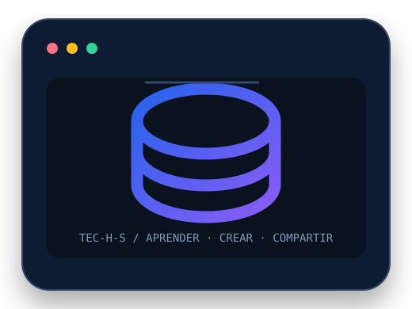

Instalación legítima
Comprende los conceptos y aprende a reconocer sus partes.
Organiza documentos, calcula con hojas de cálculo y presenta ideas. Esta guía empieza por la instalación oficial y explica cómo practicar con las aplicaciones.
Principiante · 3 lecciones · 3 ejercicios
Revisa cuenta y licencia, instala desde Microsoft y aprende una tarea inicial de Word, Excel y PowerPoint.
Comprende los conceptos y aprende a reconocer sus partes.
Aplica lo aprendido a una situación cotidiana.
Resuelve un problema y revisa buenas prácticas.
Resuelve cada reto y abre la explicación para revisar una posible respuesta.
El procedimiento depende de la edición y de la cuenta asociada a la compra. Comprueba si tienes Microsoft 365 por suscripción o una licencia de Office de compra única.
¿Qué cuenta debes usar para activar Office?
La misma cuenta Microsoft, de trabajo o de estudio asociada a la licencia.
Es la cuenta que se usó para comprar o recibir la licencia.
Word sirve para redactar y dar formato a documentos. Excel organiza datos en celdas y permite calcular resultados con fórmulas.
Escribe una fórmula de Excel que sume los valores desde A1 hasta A3.
=SUM(A1:A3)La función SUM calcula la suma del rango indicado.
Las fórmulas de Excel empiezan con el signo igual.
Una presentación funciona mejor cuando cada diapositiva expresa una idea principal y los gráficos apoyan la explicación.
¿Qué unidad contiene cada página individual de una presentación?
Una diapositiva.
La palabra empieza con diapo…
0 de 3 ejercicios resueltos
El progreso se guarda en este navegador.
Regresa a los recursos para elegir otro tema.